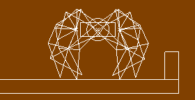

physics_draw_debug()
Returns: N/A
When creating a physics system in GameMaker: Studio, it
is often important to have a visual representation of what is
actually happening with an instance. This can be achieved by using
physics_draw_debug, which draws a schematic outline of the
physical properties associated with the instance running the code.
Here is an image of how it looks:

It should be noted that for this to work it must be in
the draw event of the instance, and it will be drawn using the
currently defined draw colour.
draw_set_colour(c_red);
physics_draw_debug();
The code above will draw a representation of the physical properties associated with that instance using the colour red.